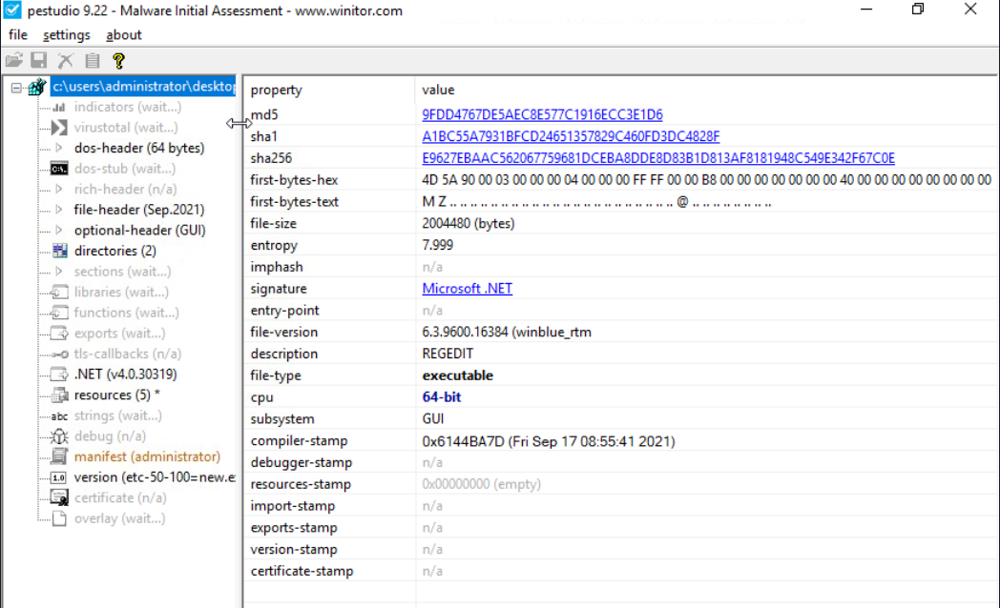

FlareVM -Arsenal of Tools
Arsenal of Tools
FlareVM, or “Forensics, Logic Analysis, and Reverse Engineering,” stands out as a comprehensive and carefully curated collection of specialized tools uniquely designed to meet the specific needs of reverse engineers, malware analysts, incident responders, forensic investigators, and penetration testers. This toolkit, expertly crafted by the FLARE Team at FireEye, is a powerful aid in unravelling digital mysteries, gaining insight into malware behaviour, and delving into the complex details within executables.
Getting your hands on this tool can be pretty daunting at first, as building it starting from scratch takes a lot of time, and the installation will take several hours!
Below are the tools grouped by their category.
Reverse Engineering & Debugging
Reverse engineering is like solving a puzzle backward: you take a finished product apart to understand how it works. Debugging is identifying errors, understanding why they happen, and correcting the code to prevent them.
-
Ghidra - NSA-developed open-source reverse engineering suite.
-
x64dbg - Open-source debugger for binaries in x64 and x32 formats.
-
OllyDbg - Debugger for reverse engineering at the assembly level.
- Radare2 - A sophisticated open-source platform for reverse engineering.
-
Binary Ninja - A tool for disassembling and decompiling binaries.
- PEiD - Packer, cryptor, and compiler detection tool.
Disassemblers & Decompilers
Disassemblers and Decompilers are crucial tools in malware analysis. They help analysts understand malicious software’s behaviour, logic, and control flow by breaking it into a more understandable format. The tools mentioned below are commonly used in this category.
- CFF Explorer - A PE editor designed to analyze and edit Portable Executable (PE) files.
- Hopper Disassembler - A Debugger, disassembler, and decompiler.
- RetDec - Open-source decompiler for machine code.
Static & Dynamic Analysis
Static and dynamic analysis are two crucial methods in cyber security for examining malware. Static analysis involves inspecting the code without executing it, while dynamic analysis involves observing its behaviour as it runs. The tools mentioned below are commonly used in this category.
- Process Hacker - Sophisticated memory editor and process watcher.
- PEview - A portable executable (PE) file viewer for analysis.
- Dependency Walker - A tool for displaying an executable’s DLL dependencies.
- DIE (Detect It Easy) - A packer, compiler, and cryptor detection tool.
Forensics & Incident Response
Digital Forensics involves the collection, analysis, and preservation of digital evidence from various sources like computers, networks, and storage devices. At the same time, Incident Response focuses on the detection, containment, eradication, and recovery from cyberattacks. The tools mentioned below are commonly used in this category.
- Volatility - RAM dump analysis framework for memory forensics.
- Rekall - Framework for memory forensics in incident response.
- FTK Imager - Disc image acquisition and analysis tools for forensic use.
Network Analysis
Network Analysis includes different methods and techniques for studying and analysing networks to uncover patterns, optimize performance, and understand the underlying structure and behaviour of the network.
-
Wireshark - Network protocol analyzer for traffic recording and examination.
-
Nmap - A vulnerability detection and network mapping tool.
-
Netcat - Read and write data across network connections with this helpful tool.
File Analysis
File Analysis is a technique used to examine files for potential security threats and ensure proper file permissions.
- FileInsight - A program for looking through and editing binary files.
- Hex Fiend - Hex editor that is light and quick.
- HxD - Binary file viewing and editing with a hex editor.
Scripting & Automation
Scripting and Automation involve using scripts such as PowerShell and Python to automate repetitive tasks and processes, making them more efficient and less prone to human error.
- Python - Mainly automation-focused on Python modules and tools.
- PowerShell Empire - Framework for PowerShell post-exploitation.
Sysinternals Suite
The Sysinternals Suite is a collection of advanced system utilities designed to help IT professionals and developers manage, troubleshoot, and diagnose Windows systems.
- Autoruns - Shows what executables are configured to run during system boot-up.
- Process Explorer - Provides information about running processes.
- Process Monitor -Monitors and logs real-time process/thread activity.
Questions
Q: Which tool is an Open-source debugger for binaries in x64 and x32 formats?
A: x64dbg
Q: What tool is designed to analyze and edit Portable Executable (PE) files?
A: CFF Explorer
Q: Which tool is considered a sophisticated memory editor and process watcher?
A: Process Hacker
Q: Which tool is used for Disc image acquisition and analysis for forensic use?
A: FTK Imager
Q: What tool can be used to view and edit a binary file?
A: HxD
Commonly Used Tools for Investigation: Overview
These tools are the basic ones used for initial investigations. See the list below.
| Tool | Investigative Value |
|---|---|
| Procmon | A helpful tool for tracking system activity, especially regarding malware research, troubleshooting, and forensic investigations. |
| Process Explorer | Allows you to see the Process of the Parent-child relationship, DLLs loaded, and its path. |
| HxD | Malicious files can be examined or altered via hex editing. |
| Wireshark | Observing and investigating network traffic to look for unusual activity. |
| CFF Explorer | Can generate file hashes for integrity verification, authenticate the source of system files, and validate their validity. |
| PEStudio | Static analysis or studying executable file properties without running the files. |
| FLOSS | Extracts and de-obfuscates all strings from malware programs using advanced static analysis techniques. |
Process Monitor (Procmon)
A powerful Windows tool designed to help you record issues with your system’s apps. It lets you see, record, and keep track of system and Windows file activity in real-time. Process Monitor is helpful for tracking system activity, especially regarding malware research, troubleshooting, and forensic investigations. It keeps real-time tabs on the file system, registry, and thread/process activity.

According to this log entry, the Local Security Authority Subsystem Service (LSASS)- related process lsass.exe has successfully read a file. LSASS handles authentication and frequently communicates with crucial system files such as lsasrv.dll (Local Security Authority Server Service).
Although this is a standard system process, LSASS may be the target of credential dumping attacks if you are examining logs for indications of malicious activity. Mimikatz and other tools frequently try to access LSASS memory. In these situations, you should watch for any additional suspicious activity related to LSASS, such as odd access patterns or processes reading or writing to lsass.exe.
Process Explorer (Procexp)
Process Explorer offers in-depth insights into the active processes running on your computer. It allows you to delve into the inner workings of your system, providing a comprehensive list of currently running processes and their linked user accounts. If you’ve ever been curious about which program is accessing a specific file or folder, Process Explorer can provide us with that information.

As you can see from the image above, the CFF Explorer app is open. Using Process Explorer(procexp), located on the desktop, we identified the process and its parent process. This is usually pretty useful when we want to monitor what other processes are being spawned, such as from a Word document, an LNK file, or even an ISO file, as threat actors typically abuse these.
HxD
HxD is a quick and flexible hex editor for editing files, memory, and drives of any capacity. It can be applied to forensic investigation, data recovery, debugging, and exact manipulation of binary data. Important features include viewing file and memory contents, editing, searching, and comparing hex data

This HxD hex editor snapshot shows the binary file possible_medusa.txt. The hex data on the left indicates the file’s contents in hexadecimal, and the ASCII interpretation appears on the right. Interestingly, the file starts with 4D 5A (Little Endian), indicating it is executable.
The Data Inspector on the right allows you to examine individual bytes by displaying their values in many data types (e.g., integer, float), facilitating a more straightforward data evaluation.
By permitting in-depth examination of a file’s unprocessed hexadecimal data, HxD facilitates inquiry by identifying file kinds, structures, and possible corruption. Its Data Inspector feature helps by offering insights into particular byte values.
CFF Explorer
With the help of CFF Explorer’s comprehensive file information, investigators can generate file hashes for integrity verification, authenticate the source of system files, and validate their validity (e.g., by looking for unusual alterations). This is important to know when analyzing malware since dangerous code may be hidden in altered system files.

The cryptominer.bin file’s details are displayed in the sample. On September 23, 2024, a 64-bit Portable Executable file was generated. The file’s information can be verified by its hashes (SHA-1 and MD5). During investigations, this tool aids in confirming file information lookup and locating possible problems.
Wireshark
Regarding network traffic analysis, Wireshark is a powerful tool that investigators may use to hunt down dubious connections, examine protocols, and spot possible assaults or data exfiltration. In this case, TLSv1.2 suggests a secure, encrypted connection that can mask harmful activity or safeguard legitimate traffic.
PEStudio
Static analysis, or studying executable file properties without running the files, is done with PEstudio. This feature is beneficial in several situations. PEstudio offers a variety of information about a file without putting users in danger of execution, which aids in identifying executables that seem suspect or harmful.
So, how does it work? Let’s look at the image below.

This example shows the examination of an executable file, PSexec.exe ( not in the VM; this is a pure example only), using PEstudio 9.22, a static malware analysis tool. The file has a dual purpose—legitimate for system administrators but potentially exploited by hackers for remote access.
The file’s entropy value of 6.596 indicates a remote chance of packing or encryption, which is typical of dangerous software. Version 2.34 of this 32-bit console-based application allows it to run programs remotely, a feature frequently used to migrate laterally during attacks. The file is assembled using Visual C++ 8.
The dual-use nature of PsExec, typically legitimate but suspicious in compromised environments, combined with low to medium indicators and moderately high entropy, makes its presence on a system concerning, especially if remote code execution is not expected. Its use in post-exploitation phases warrants further investigation to determine if it’s being misused maliciously.**
FLOSS
Using advanced static analysis techniques, the FLARE Obfuscated String Solver (FLOSS, formerly FireEye Labs Obfuscated String Solver) automatically extracts and de-obfuscates all strings from malware programs. Like strings.exe, it can enhance the basic static analysis of unknown binaries. FLOSS also includes more Python scripts in the script’s directory, which can be used to load the script’s output into other programs like IDA Pro or Binary Ninja.
Questions
Q: Which tool was formerly known as FireEye Labs Obfuscated String Solver?
A: FLOSS
Q: Which tool offers in-depth insights into the active processes running on your computer?
A: ` Process Explorer`
Q: By using the Process Explorer (procexp) tool, under what process can we find smss.exe?

A: System
Q: Which powerful Windows tool is designed to help you record issues with your system’s apps?
A: Procmon
Q: Which tool can be used for Static analysis or studying executable file properties without running the files?
A: PEStudio
Q: Using the tool PEStudio to open the file cryptominer.bin in the Desktop\Sample folder, what is the sha256 value of the file?

A: E9627EBAAC562067759681DCEBA8DDE8D83B1D813AF8181948C549E342F67C0E
Q: Using the tool PEStudio to open the file cryptominer.bin in the Desktop\Sample folder, how many functions does it have?
A: 102
Q: What tool can generate file hashes for integrity verification, authenticate the source of system files, and validate their validity?
A: CFF Explorer
Q: Using the tool CFF Explorer to open the file possible_medusa.txt in the Desktop\Sample folder, what is the MD5 of the file?

A: 646698572AFBBF24F50EC5681FEB2DB7
Q: Use the CFF Explorer tool to open the file possible_medusa.txt in the Desktop\Sample folder. Then, go to the DOS Header Section. What is the e_magic value of the file?

A: 5A4D
Analyzing Malicious Files!
A suspicious windows.exe file was downloaded by a user on 09/24/2024 at 3:43 AM. This download was flagged as a potential threat. The monitoring team has sent you an email requesting to perform an analysis of it.
Our initial approach for this investigation is to perform static analysis to get initial information from the binary.
Analysis using PEStudio

For the computed MD5 9FDD4767DE5AEC8E577C1916ECC3E1D6 and SHA-1 A1BC55A7931BFCD24651357829C460FD3DC4828F hashes, comparisons with established databases like VirusTotal are recommended. If there are no known detections, there’s a greater chance that it’s a fresh or undiscovered malware campaign.
Although the file claims to be connected to the Windows Registry Editor (REGEDIT), which you can see based on the description, this is likely an attempt to trick people and evade discovery.
Legitimate REGEDIT tools are usually found in the C:\Windows\System32 directory rather than the user’s download location.
What else?

Редактор реестра” - “Registry Editor”, “Операционная система Microsoft® Windows®”) in the file’s metadata is suspicious, primarily if the user or the organization does not operate in a Russian-speaking environment. This could potentially have profound implications for our organization.
The absence of a rich header indicates that the file is potentially packed or obfuscated to avoid detection by static analysis tools. This is typical behaviour of sophisticated malware that tries to evade detection by altering critical sections of its PE file.
The function tabs list API calls that the file has imported. This is also known as the IAT (Import Address Table). By clicking on the blacklist tab, PeStudio will sort the API by moving all the blacklisted functions to the top. This is useful because it enables us to understand how malware may behave once it compromises a host. The image below shows what API has been imported.

Here are the important functions that we noted.
set_UseShellExecute: This function allows the process to use the operating system’s shell to execute other processes. This is often seen in malware that spawns additional processes to carry out malicious actions.
CryptoStream, RijndaelManaged, CipherMode, CreateDecryptor: These APIs indicate that the executable uses cryptographic functions, specifically Rijndael (AES encryption). Malware may use cryptography to encrypt communication and files or even implement ransomware functionality.
Analysis using FLOSS
Run the command FLOSS.exe .\windows.exe > windows.txt

Aren’t these familiar? These are the functions that we saw earlier using the PEStudio tool!
Analyze with Process Explorer and Process Monitor
In this example, we will analyze the network connectivity of the file cobaltstrike.exe
We will try to figure out if the file is making any network connectivity to any possible c2 server. Let’s get started! Run the file cobaltstrike.exe and open Process Explorer on the desktop or from the taskbar. You can also search for it in the Windows search bar. If you manually click the binary Explorer.exe would be the parent process, and cobaltstrike.exe would be the child process. Let’s see if that is indeed the case.

Right-click on the process, select Properties and go to the TCP/IP tab. We should be able to determine the destination it connects to and the state it sends.

There we have it! On another note, when we are doing analysis, it needs to be verified and precise. Therefore, we won’t be relying on a single tool. We will use another tool to determine if the information is correct. Stop the process and rerun it. This time, we will use Procmon or Proces Monitor
When we open Procmon, looking for the binary is challenging as it will list all active processes. What we are going to do is filter it. The image below points to the filter icon. Or you can press CRTL + L.

- Now, using this filter involves several steps. This includes:
- Select the Process Name
- Select contains
- type any value containing any word related to the process. In this case, cobalt
- Click include
- And then Add and Click on Apply
- You should be able to see the conditions added.

This should give us a more detailed result.

This confirms that the binary was indeed making a connection to an unknown IP address which is 47.120.46.210.
Questions
Q: Using PEStudio, open the file windows.exe. What is the entropy value of the file windows.exe?
A: 7.999
Q: Using PEStudio, open the file windows.exe, then go to manifest (administrator section). What is the value under requestedExecutionLevel?

A: requireAdministrator
Q: Which function allows the process to use the operating system’s shell to execute other processes?

A: set_UseShellExecute
Q: Which API starts with R and indicates that the executable uses cryptographic functions?
A: RijndaelManaged
Q: What is the Imphash of cobaltstrike.exe?
One can read it from PEStudio.

A: 92EEF189FB188C541CBD83AC8BA4ACF5
Q: What is the defanged IP address to which the process cobaltstrike.exe is connecting?
A: 47[.]120[.]46[.]210
Q: What is the destination port number used by cobaltstrike.exe when connecting to its C2 IP Address?
Using the hint, we make use of the pcap in the Sample folder and filter for the address the program is connecting to.

A: 81
Q: During our analysis, we found a process called cobaltstrike.exe. What is the parent process of cobaltstrike.exe?
A: explorer.exe
Section 4
Questions
Q:
A: ``
Q:
A: ``
Q:
A: ``